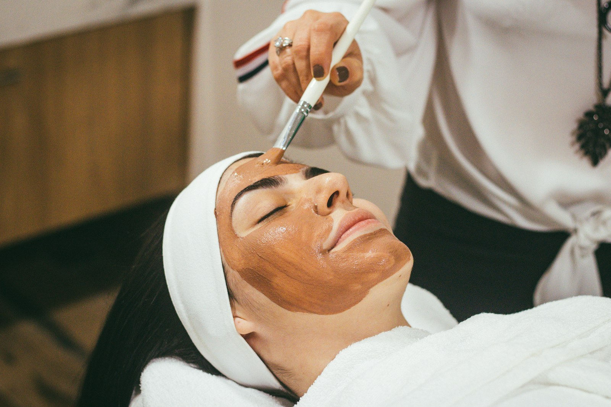
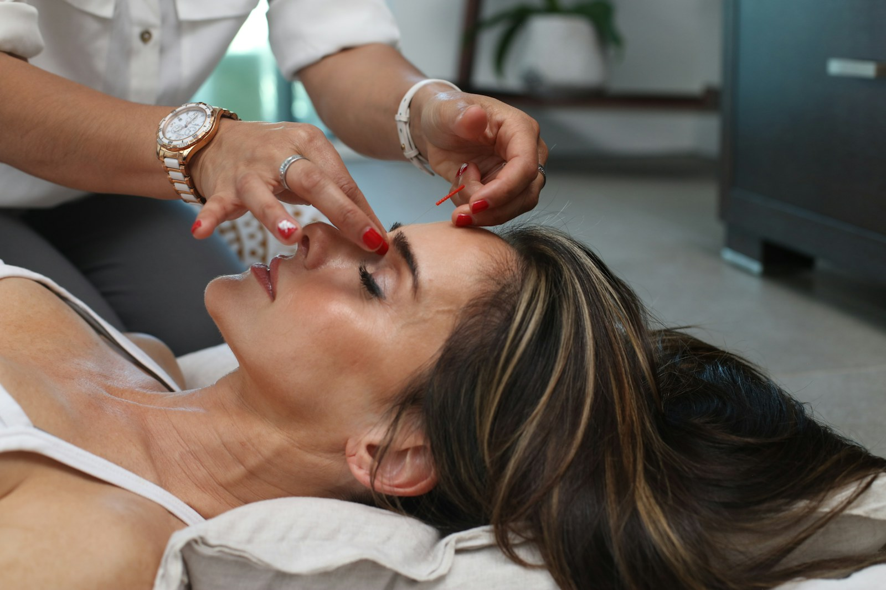
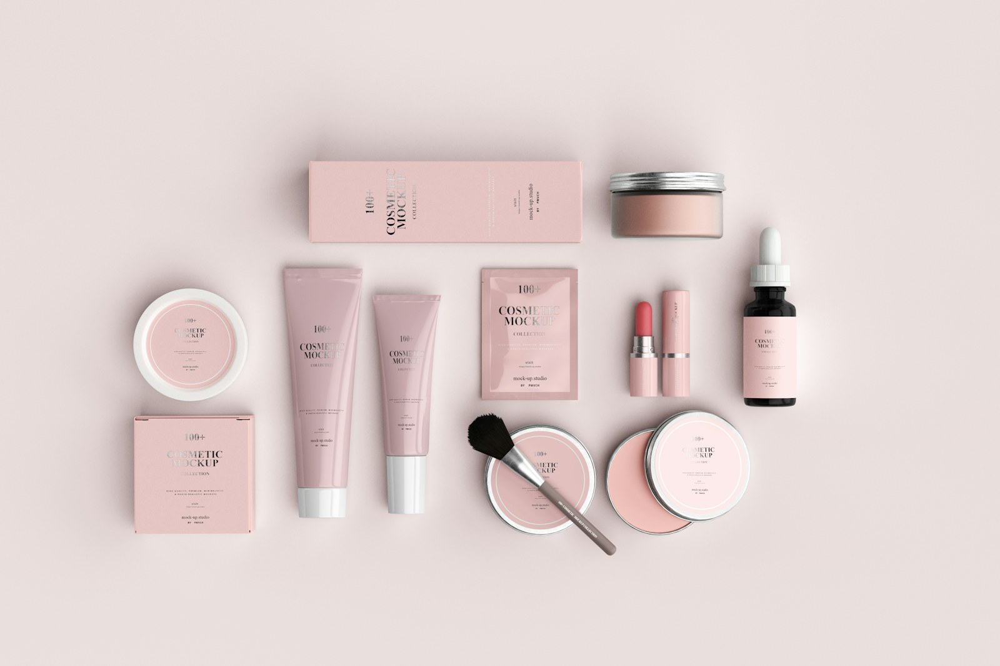
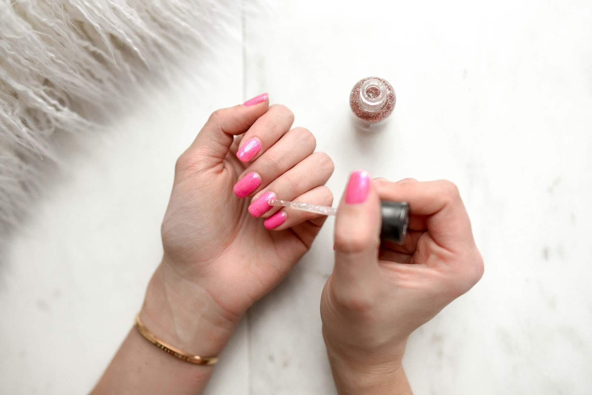
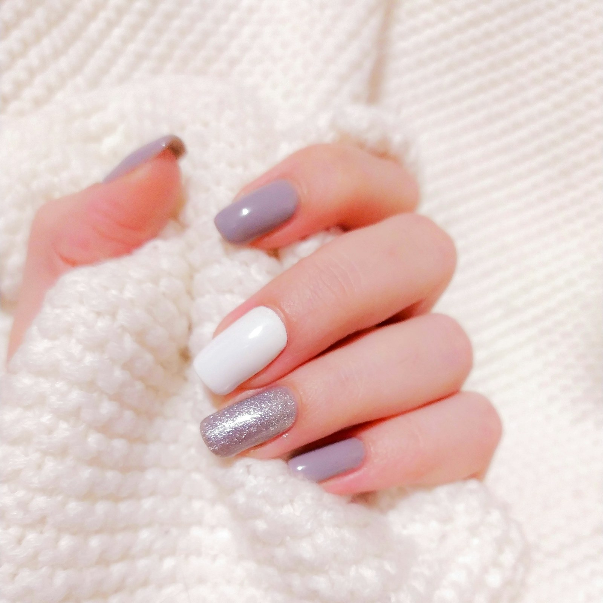
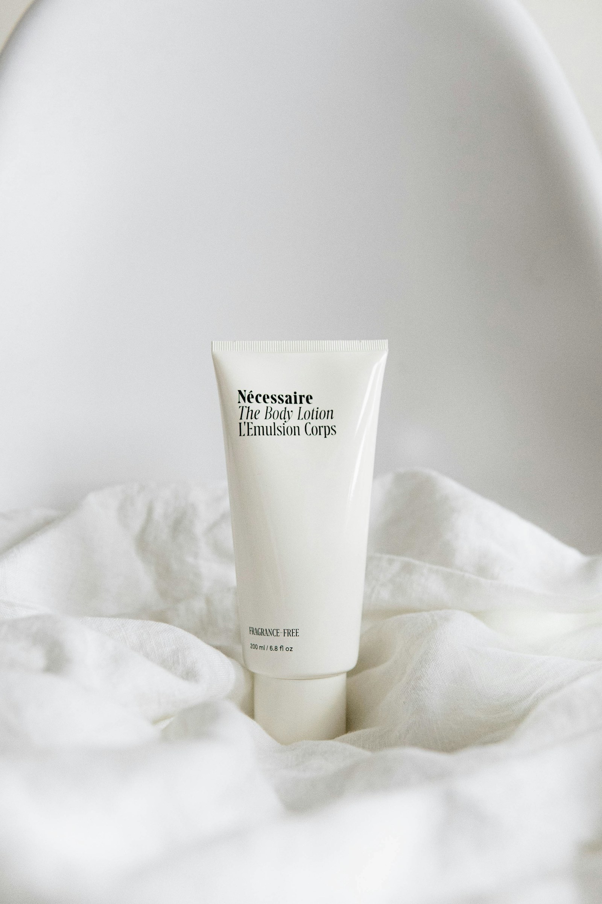

Viso su misura
Pulizia, nutrimento e trattamenti mirati: la pelle trova il suo equilibrio e lo si vede dalla prima seduta.
Estetica avanzata, COCOcera point e solarium in centro ad Ariccia. Un salone piccolo quanto basta per coccolare ogni cliente, una per una.

Dalla pulizia del viso ai trattamenti più specifici: protocolli su misura per la tua pelle, con prodotti professionali e mani esperte. Niente corsa, niente "pacchetto standard": qui si parte sempre da come stai davvero.
Pulizia, nutrimento e trattamenti mirati: la pelle trova il suo equilibrio e lo si vede dalla prima seduta.
Principi attivi professionali scelti per le esigenze della tua pelle, stagione dopo stagione.
Massaggi e trattamenti corpo per ritrovare leggerezza: il tuo momento della settimana, solo tuo.
Cerchi il trattamento COCOcera nei Castelli Romani? Sei nel posto giusto: siamo l'unico punto di riferimento ad Ariccia. Una specializzazione che chi conosce, cerca — e chi prova, non cambia più.

Un'abbronzatura uniforme e controllata, anche a febbraio. Sessioni calibrate sull'abbronzatura che vuoi, con la cura che la tua pelle merita: mai di più, mai di meno.
Sessioni brevi e programmate, per un incarnato dorato naturale tutto l'anno. Ti consigliamo il percorso giusto in base al tuo tipo di pelle: il colore è il risultato, la cura è il metodo.
Prima volta? La prima consulenza serve proprio a questo: capire da dove partire.
Mani curate, dettagli perfetti, prodotti scelti uno a uno: sono le cose piccole che fanno la differenza tra un trattamento e un rituale.




In pieno centro ad Ariccia, a due passi da piazza: facile da raggiungere da Albano, Genzano e da tutta la Castelli Romani.
| Lunedì | 10:00 – 15:30 |
| Martedì – Venerdì | 08:30 – 18:30 |
| Sabato | 09:00 – 17:30 |
| Domenica | chiuso |
Il modo più semplice? Una telefonata. Ti rispondiamo negli orari di apertura e troviamo insieme la seduta giusta per te.
340 825 7290Chiamaci o passa a trovarci in Piazzale Aldo Moro 1, Ariccia: ti consigliamo il trattamento giusto, senza impegno.
Sei già nostra cliente? Lascia una recensione su Google: per noi vale più di qualsiasi pubblicità.